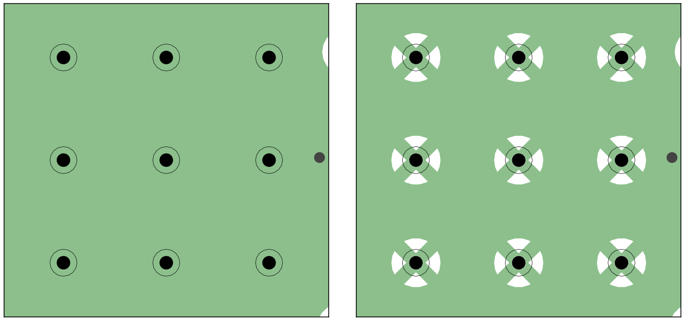

Two new boards that wouldn't start
The RevD.8 main boards arrived assembled, and neither of them would start. Power was there, all the voltages were right, but the main chip just sat there.
Looking for the cause
I compared every measurement with the older board that works. Same design, same parts, same supplies, no bad joints on the pins. Two numbers stood out: two internal supplies of the chip were about 0.3 V too high, and the chip was holding itself in reset. If I forced it out of reset, it ran for a few seconds and stopped.
Then I found a thread on the chip maker's forum with exactly the same numbers. Their fix was to re-solder the big pad under the chip. That pad is the chip's main ground. If it isn't soldered, part of the chip finds ground through a single pin instead, and its internal voltages float up by about 0.3 V. That's what I was seeing.
Why both boards
The new board has six layers instead of four, and I had connected the pad's vias solidly to four whole ground layers. During soldering, all that copper pulls the heat away, and the solder under the chip never fully melts. The old 4-layer board used "thermal relief" connections, small spokes instead of solid copper, and had no problem.

Confirmed
I couldn't rework the chip myself, but I found someone who could, and got an X-ray of the result. After re-soldering the pad, the board's voltages matched the old board exactly and it booted straight into the system. That's the board in the first fully working prototype.
RevE.1
- Ground connections back to thermal relief everywhere, including the vias under the chip.
- More solder paste under the chip (from about 62% to 70% of the pad).
- The factory is asked to watch the oven profile and X-ray the chip.
- A clock that keeps running while the console is off, plus a few fixes from an outside review.
Two RevE.1 boards were ordered on Nov 11. A new automatic check now fails the design if any ground connection under the chip is solid again.